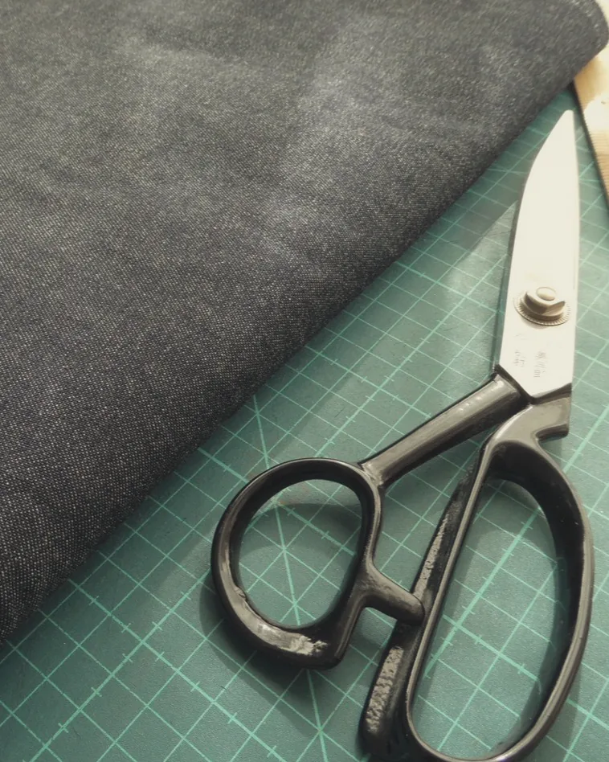
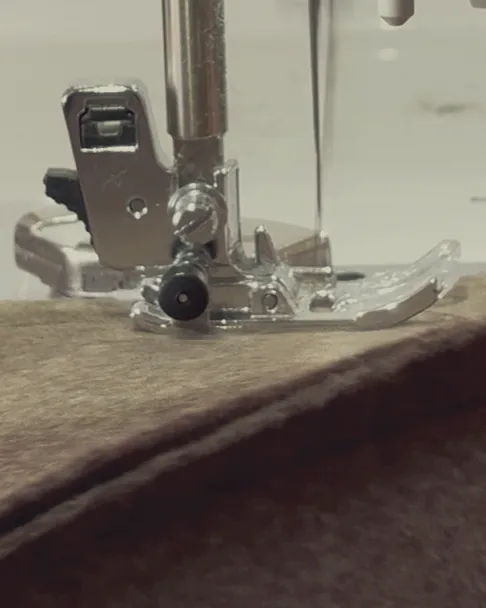
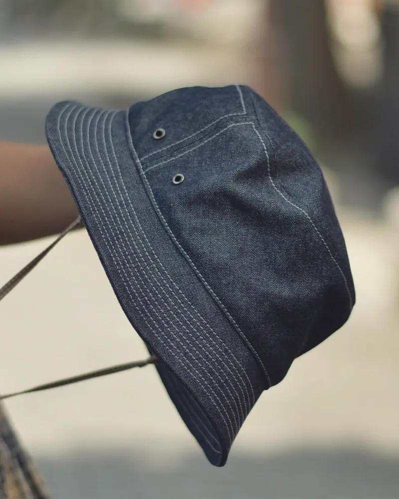
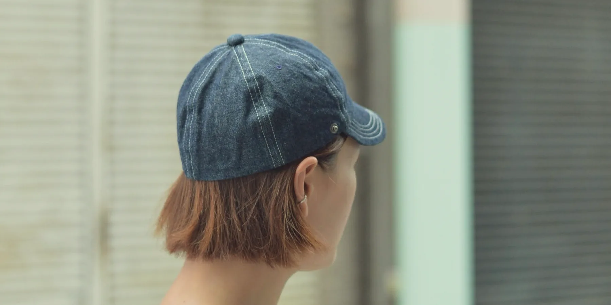

帽子と暮らしの道具 atelier Sunka（アトリエ サンカ）
使って育てる、
暮らしの道具
毎日の暮らしに、なじむかたちを。
ABOUT
暮らしの中で、心地よくいつもそばにあるものを
atelier Sunka（アトリエ サンカ）は、帽子を中心に、暮らしの道具をつくるブランドです。
デザインから製作、すべてをひとりで手がけています。
個性的であることより、日常に馴染む素朴さがあること。
心地よく使えることを、なにより大切にしています。

いつもの日に
毎日の散歩に、趣味の山登りに、欠かさない庭仕事に。
ものづくりの時間や、日々の台所にも。
暑い夏も寒い冬も、暮らしに寄り添う相棒です。

出かける日に
気ままな遠出に、いつもと違う街歩きに。
大好きな旅や、ゆったりとしたカフェ巡りにも。
いつもの装いに、ちょうどいいをプラスして。
CONCEPT
大切にしていること

01
素材
帽子は、綿やリネン、ウールなど、天然素材を中心に選んでいます。使うほどになじみ、洗うたびにやわらかくなっていくタフな素材です。

02
ひとりで、ひとつずつ
デザインから裁断、縫製、仕上げまで。たくさん、早くつくるよりも、ひとつひとつと丁寧に向き合う時間を大切にしています。

03
使って育てる
日常的に使う。メンテナンスをする。それを繰り返す。そのたびに、色や形が変わっていく「セルフヴィンテージ」を、お楽しみください。

時代に合わせすぎない、
ちょうどいい日常を。
PRODUCT